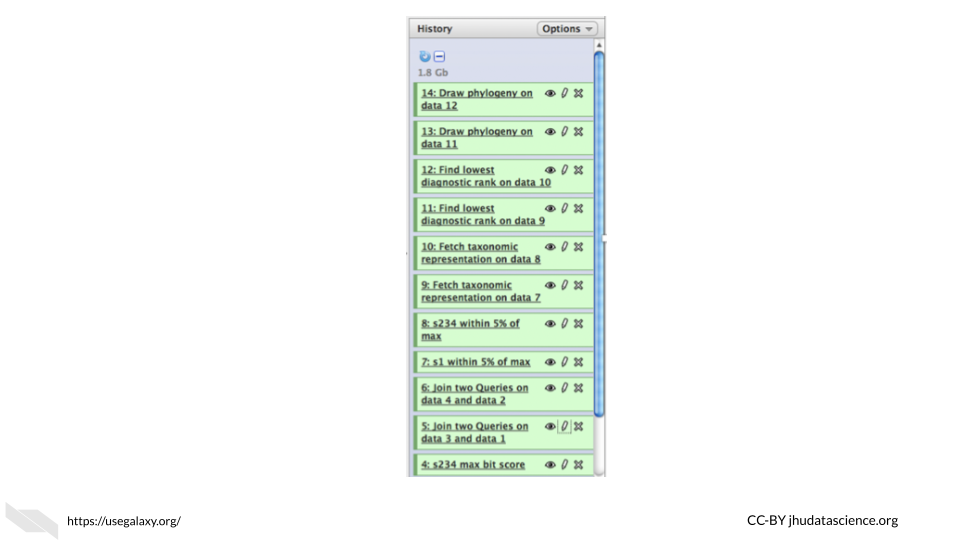
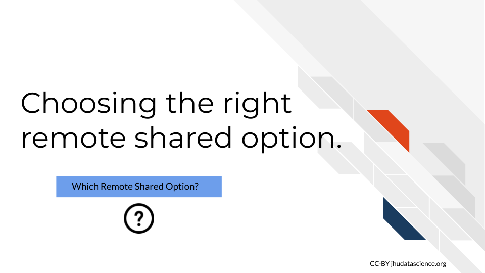

Chapter 7 Computing Resource Decisions
Now that we have discussed a bit about how computers perform computations and described a bit about computing options, lets discuss more about how you might choose the right computing resources for your work. In this chapter we will discuss aspects that you should consider when deciding between different computing resource options.

To afford you the best opportunity to perform the informatics research that you would like, it is useful to become familiar with the benefits and drawbacks of various computing options. First we will start out with some general considerations that you should think about when beginning to determine what computing option makes sense for your work.
The following are the major decision points for your computing needs:

Note: This content was adapted from content by Frederick Tan for the AnVIL project. See his course created with Jeff Leek, Sarah Wheelan, and Kai Kammers here.
7.1 General Computing Considerations
Choosing a computing platform depends on several considerations.
Asking yourself and your research team about the following considerations can help you find the right computing platform.
![General Considerations: 1. How computationally intensive will the work be? 2. How much data storage is and will be needed? 3. Do I plan on collaborating with others outside my institute? 4. Do I need extra privacy protection for my data? 5. How much money can I spend on computing? 6. Do I want extra guidance for my informatics work? 7. Do I need flexibility? Might I work with more data modalities in the future? 8. Do I need scalability? Will I soon work with more data? 9. Do I need access to large controlled datasets? 10.What kind of interface would be helpful?](resources/images/07-Computing_Decisions_files/figure-html/1B4LwuvgA6aUopOHEAbES1Agjy7Ex2IpVAoUIoBFbsq0_g1198aebfc2f_0_90.png "General Considerations: 1. How computationally intensive will the work be? 2. How much data storage is and will be needed? 3. Do I plan on collaborating with others outside my institute? 4. Do I need extra privacy protection for my data? 5. How much money can I spend on computing? 6. Do I want extra guidance for my informatics work? 7. Do I need flexibility? Might I work with more data modalities in the future? 8. Do I need scalability? Will I soon work with more data? 9. Do I need access to large controlled datasets? 10.What kind of interface would be helpful?")
Let’s take a bit of a deeper dive now for each of these considerations.
7.1.1 Computation needs
Now that you know more about determining your personal computer’s computing and storage capacity, as well as how to determine or estimate the files sizes that you might use for your research, you can begin to assess if your personal computer is up to the task. When determining what your computing needs might be, remember to evaluate how many files you might use in your analyses, the file sizes, the amount of RAM and CPUs (and possibly GPUs that your computer has) and some level of understanding for how intensive the computing tasks are that you plan to perform. How do you assess this? If the files that you intend to use in your analysis are quite large for your computer’s storage capacity, then it is likely that your computer might struggle to work with such files. This might also be the case if you plan to use many smaller files (such as hundreds or thousands, but smaller files can add up quickly). Finally, if you plan to perform many steps on your files in your analysis this may also require more computing resources than you have available on your current personal computer. Shared computing options will generally have the capacity to allow you to do your work, unless you have very large data needs and you hope to use a very specialized computing platform that may not support large-scale work. Checking with the local or remote computing options that you are interested in about the computing capacity ahead of time before you start an analysis if you have large data analysis plans would be a good idea. Cloud computing options can be great if you need more efficiency, as there are no job queues to worry about like with other more traditional shared resources.
7.1.2 Data storage
Again, now that you know how to assess the data storage potential of your computer, you can decide if your computer can handle storing all the files that you might wish to use in your analysis. Think about your current data analysis plans but keep in mind your future plans as well. If you hope to replicate experiments with more samples, you might run out of storage. One way around this is to by external additional storage (which is also a good idea for backing up your data!). However, if you think that you might have much larger scale research plans in the future, you might want to think about shared computing options. Cloud computing platforms and more traditional servers have different storage capacities, so it is worth checking out the options that might be helpful for your research. Also keep in mind that it will take time to transfer your data, especially if your data is very large.

7.1.3 Multi-institute collaboration
If you plan to work with others outside of your institute that would not have access to the same local shared computing resources, then remote computing options would be really helpful for allowing your collaborators to work on the same data together. Cloud platforms especially make it easier for collaboration, as everyone can share the exact same computational environment including hardware, software, and datasets.

7.1.4 Protected data
Are you working with protected data that requires special security precautions?

[source]
If you are working with data that might be protected by HIPAA, such as electronic health records, then special security measures are required to ensure that only authorized users have access to the data. Be careful about both local and remote shared resources. Sometimes extra privacy and data security measures are built in and at other times, you will need perform extra steps to get the data security and privacy that you need. Although many cloud computing systems do not allow for extra privacy, there are platforms that provide compliance with regulations like HIPAA and FedRAMP.

7.1.5 Costs
Often local shared computing resources at your institute can be much less expensive than some of the common cloud computing options. However, this is not always the case and if you have very specific analysis goals in mind, the benefit of cloud computing resources, is that you typically only pay for the resources that you actually use. This does also involve learning how costs are calculated for the particular cloud resource, which can be a challenge, but many cloud platforms that were designed for research such as Jetstream or Terra/AnVIL can be very affordable and in some cases some small platforms offer free resources or free trials initially to start.

7.1.6 Extra guidance
Cloud computing platforms such as Galaxy, AnVIL, and GenePattern offer lots of training material and resources about how to actually perform analyses, especially for genomic analyses. Galaxy also supports other types of data, as do many other platforms, as described in the last chapter. Having the extra guidance like that offered with these types of platforms can be very beneficial to investigators that are trying out new methods!

7.1.7 Flexibility
If you plan on working with multiple data modalities like for example both imaging and genomic data, consider computing options that are flexible for such analyses. Some cloud computing options designed for research are more general and supportive of this, such as Galaxy to some extent, as well as to a larger extent SciServer, Jetstream, or CyVerse.

7.1.8 Scalability
If you hope to start using very large datasets or plan to collaborate with many people using many different data sets, then you might need to keep in mind the future storage and computing capacity of the computing resources that you are considering. Starting with an option that allows for much more data storage and computing such as many of the more general cloud computing options might be best for you in this case, as you might find yourself restricted by smaller cloud platforms or more traditional shared computing resources.

7.1.9 Data access
Some cloud computing options already have data available that may be of interest for you and your work. For example Galaxy, AnVIL, and GenePattern provide access to many genomic datasets. Smaller platforms can also have access to data that may be of specific more clinical interest to you as well such as the Cancer Genome Collaboratory, which provides access to data from the International Cancer Genome Consortium (ICGC).

7.1.10 Interface
Will you need a graphical interface, a command line interface, or both?
We described this a bit earlier, but here we will provide some more thorough examples.
Galaxy offers a graphical user interface for performing analyses and tasks. For example in the following image we show a GUI for joining two files:

Another Graphical User Interface example comes from the OHIF image viewer which has a tool bar for modifying, viewing and annotating images.
 which includes a tool bar (above center) to modify, view, and annotate images. A menu on the left allows users to access images related to the current patient in other studies, and a menu on the right is used for making measurements and exporting measurement reports.")
Recall, that a command line interface (also known as a character interface) allows users to specify functions with code.
For example, one could perform functions in R using Bioconductor packages such as Biostrings with a command line interface:

A situation where you might use both a command line interface and a GUI, is using RStudio to perform an analysis in R with Bioconductor packages. RStudio is what is called an IDE or an integrated development environment, which is an application that supports writing code. There are many tools to help you including a console for writing code in R with command line interfacing, as well as graphical interface tools. As shown in this example below, one can inspect and save a plot (that was created with the command line) by using a GUI. The plot was created using the same package as the one used in the command line interface example.

Some cloud computing options will have either interface option while others will only have one. This is an important consideration when you decide what computing resources to use.

7.2 Local shared resources vs remote shared resources
Often the first decision about cloud computing resources is based on determining if your personal computer can handle your work. If you have already determined that you indeed need more computing power than your personal lab computers, the next decision is between local shared resources (like an institutional server) and remote shared resources, which include more traditional sharing resource options such as XSEDE, as well as more modern cloud computing options. See Fischer (2019) for more information about the costs and benefits of using a cloud option like Jetstream for your computational work. We will now discuss some questions that you might ask yourself to make the decision between local and remote shared computing resources.

- Are local shared computing resources sufficient?
When a local computing resource solution already works, one may rightly question the time required to learning how to use a new cloud-based platform. However, when local solutions are insufficient or unsustainable (say other users often use up most of the resources or a server is often down), then remote options may be worth considering.
- Do you want to work with especially big or controlled access datasets?
Increasingly large datasets like the Genotype -Tissue Expression (GTEx), Therapeutically Applicable Research to Generate Effective Treatments (TARGET) or The Cancer Genome Atlas (TCGA) are being stored on the cloud-based platforms. If your work relies on being able to access a large dataset like this, then cloud computing resources may be your only practical option.
- Do you need to work with collaborators, especially those outside of your institute?
Computational research increasingly involves larger and larger collaborations. While many systems exist to share work and more traditional remote shared resources can work, cloud platforms make it easier for everyone to share the exact same computational environment including hardware, software, and datasets.
We will now discuss several opportunities and challenges that cloud computing currently presents.
7.2.1 Benefits of Cloud Computing
The state of Cloud computing is continually evolving. Here, we highlight some of the main current benefits:
- Sharing history
The first major benefit is the increasing ease with which one can share and collaborate on research projects. Shown here is the History feature of Galaxy. Using this, one can share not only what datasets they used but also every computational manipulation that was performed.

By sharing such a history, one can reproduce an analysis in its entirety (if they use the same data), allowing collaborators to offer comments and extend upon the work with ease.
- Sharing Workflows between Platforms
While sharing complete analysis histories is for the most part constrained to a particular software platform, a second benefit that has arisen is the ability to share workflows between platforms.Dockstore is a great open-source and free option to share and find bioinformatics workflows that can be launched using different platforms.
Shown here is a diagram of an analysis pipeline to create a custom reference for single cell 10x data using cell ranger published by the Klarman Cell Observatory on Dockstore. Users can launch the workflow on various supported platforms such as Terra or AnVIL.:

This higher level abstraction coupled with container technology allows this multistep analysis to be run with relative ease on supporting platforms like Terra, AnVIL, or DNAnexus, which is yet another computing platform company, although with generally more costs associated as compared to Terra or AnVIL.
- Using Commodity Hardware
The third Benefit we highlight is the increasing ease by which one can provision commodity hardware at scale.
What this means is that you can pay reasonable costs to complete your analysis in less time by renting hundreds to tens of thousands of Cloud-based computers – importantly stopping the bill when your analysis is complete. Specialized hardware like GPUs and large memory nodes are also available for rent allowing you to pay only for what you need. This could be difficult to do with a local server, which might require a great deal of time to increase the storage and computing capacity of the server, and it might be cost prohibitive.
- Less Etiquette
Relative to more traditional shared computing resources, you don’t need to worry as much about sharing etiquette with cloud computing options because these resources typically have more than enough to go around. There is a trade off in that you will need to learn how to work with the cloud computing platform, however you can be more independent about what software you use and how many resources you use without bothering others.
- GUI Interface
Although you can work with software that has a GUI interface on a more traditional local or remote shared resource, having a GUI directly built into the computing environment is often not available, while many cloud computing options provide GUI systems, which can be helpful for users who are less familiar with writing code for the command line.
- General Security
Often cloud computing options, depending on the size of the resource, will have a team of people working on maintaining the security of the resource. Thus often these resources have more manpower to commit to security than some of the smaller local shared resources. That being said, it depends on the resource, it is a good idea to look into the security measures of resources that you are considering to use. Furthermore, this does not necessarily mean that the security meets the requirements for certain data privacy protections. See the next section for more on this.
7.2.2 Challenges of Cloud Computing
Balancing these benefits are the following challenges:
- Data Transfer
Data transfer and data management remains a cumbersome task. While storing data in the cloud has its advantages, it also has corresponding storage costs. Thus, careful planning is necessary with regards to what data will be stored where, as well as budgeting the time necessary to transfer data back and forth. However if you have yet to start work on a local shared computing resource than the work to transfer may be comparable. Additionally if you plan to use public data that is accessible through a platform designed for research than you may in fact have less data transfer needs when working with a cloud computing option.
- Data Privacy
Most cloud resources offer features that make it easier to access and share data, and these features often come at the expense of data privacy. Thus, special precautions must be implemented to securely store protected datasets such as human genome sequences and electronic health records.
Some of the specialized research platforms allow for this as described in the previous chapter. Make sure you check what is required to set up an extra privacy protection - often this will not be automatic. Also keep in mind that although local shared resources like that of your university often have good security and data privacy policies and protection mechanisms, this is not always the case. It is worth investigating the methods the each resource uses that you are interested in.
Also make sure you check that consent forms for any data collection describe your data sharing intentions on shared resource platforms and have been approved by IRB.
- Costs
Controlling costs, especially with regards to storage and computing, presents a third formidable challenge. Understanding how the billing works for each shared cloud platform can be very confusing and generally requires a bit of time to learn. It can be difficult to be aware of how much money is currently being spent and how to estimate how much money is likely to be spent in the future.
To avoid costly accidents make sure you are aware of the billing for the resources you are using and you inform students and other lab members.
- IT
A final challenge is that many IT support staff do not have extensive experience managing cloud resources. Should IT choose to support analysis on the cloud, they would face the aforementioned challenges of understanding and supporting data management, security compliance, and cost management. Fortunately, large initiatives like AnVIL, Galaxy, and CyVerse continue to work on democratizing access to cloud computing by tackling many of these challenges.
7.3 Choosing between remote sharing options
The final major decision, should you decide that you want to go with a remote sharing option is to decide which remote computing resource to go with.

This decision should be based on the following:
 Does the resource offer the privacy protection needed? 2) Does the resource allow for me to use the data modalities I need? 3) Does the resource already have data that I might want? 4) Does the resource provide extra guidance that might be helpful for my work? 5) Does the resource offer the interface that I would like to work with?")
7.4 Overall Decision Process
We suggest evaluating your computing needs based on the following decision tree. The tree reads from left to right and you can click on the image to zoom.

7.5 Conclusion
We hope that this chapter has given you some more perspective on how to make important computing decisions to make the most out of your work.
In conclusion, here are some of the major take-home messages:
- The three major computing decisions are:
- Personal computer vs Shared resource
- Local shared resource vs. Remote Shared resource
- Which shared resource.
Start first with determining if your personal computer can handle your work or if you have plans to collaborate with others at different institutes.
- The following are general considerations that can help you make each of the 3 decisions:
- How computationally intensive will the work be?
- How much data storage is and will be needed?
- Do I plan on collaborating with others outside my institute?
- Does my data that need extra privacy protection?
- How much money can I spend on computing? - Do I want extra guidance for my informatics work?
- Do I need flexibility? Might I work with more data modalities in the future?
- Do I need scalability? Will I soon work with more data?
- Do I need access to large controlled datasets?
- What kind of interface would be helpful?
The main benefits of cloud options are easier sharing of data, code, and workflows even across different computing platforms, access to large amounts of computing resources, generally only need to pay for the resource you actually use, less need to be as conscious of proper etiquette for sharing computing resources.
The main drawbacks of cloud options in general are:
- If you were already using a shared resource then migrating to the cloud will require data transfer effort and time
- Some cloud computing options do not provide data privacy protection that may be needed for certain types of data
- Costs calculations can be especially confusing and you will need to learn how it works for the particular resource that you are interested in using
- There will be less IT support form your local IT department as many of these resources have their own infrastructure, however many options provide their own guidance and support
- More and more cloud computing options are being developed and designed specifically for research, consider the following questions when choosing between cloud-based options:
- Does the resource offer the privacy protection needed?
- Does the resource allow for me to use the data modalities I need?
- Does the resource already have data that I might want?
- Does the resource provide extra guidance that might be helpful for my work?
- Does the resource offer the interface that I would like to work with?
- Does the resource offer me access to a relevant community for my work that would be helpful?